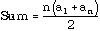
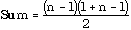
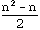

Before going on to other methods of sorting, it is time to consider the performance of the methods used so far. For the sake of simplicity, continue to suppose that the data to be sorted consists of an array of cardinals [1 .. n]. Each of these cardinals in turn must be compared with the others in order to find its correct position in the sorted array. The data must also be moved about in the array, and this can (as in the last section) be achieved by swapping items that are out of place with respect to one another. At each comparison, there may or may not be a swap, so in general, the time taken by a sorting algorithm will depend on the total number of comparisons.
For the bubble sort and selection sort, on the first pass there are n - 1, comparisons; on the second, there are n - 2; on the third n - 3, and so on, until the last pass, where there is one comparison Adding these up in reverse, the total number of comparisons will be:
1 + 2 + 3 + ... + (n-1)
an arithmetic sequence of n - 1 terms with common difference 1, for which the sum is (see section 3.8)

and substituting n-1 for the number of terms yields

which simplifies to 
Since the n2 term grows much faster than n, it will dominate this expression. It is reasonable to conclude, therefore, that in the two cases considered so far, the sorting algorithms are O(n2) with respect to comparisons. Indeed, this is the worst possible performance, for no more comparisons than 1 + 2 + 3 + ... + (n-1) should have to be made for any sorting algorithm. The bubble sort may make a swap for every comparison, so in the worst case, its performance is also O(n2) for the swapping. The selection sort makes at most one swap per pass, so it is O(n), with respect to swapping.
From previous analysis of search routines, O(n2) behaviour seems to relate to the linear nature in which the comparisons are done. It seems reasonable to expect that some method ought to be available to do the comparisons in a binary fashion so that for each of n items there are only log2n comparisons (and possibly swaps). If so, such an algorithm ought to be O(nlog2n) but may be expected to have more complex code.
Sorting algorithms that are O(n2) are said to be simple sorts. Those that are O(nlog2n) are said to be advanced sorts.
In the sections that follow, additional examples of both types of sorting algorithm will be explored. Simple sorts (especially the two in the last section) have the easiest code to understand, work well on small amounts of data, and do not take long to code, but even they can be fine-tuned to increase performance in many cases. The advanced sorts are sometimes more difficult to understand and code, but for very large data sets, it is better to take few times through a complicated loop than far more times through a simple one.
It is also worth noting before going on that the intention of most array sorting is to sort the array items in place, that is, to compare and trade (or move) them about while only one (or a small number) are held in temporary variables. A few methods use two arrays, one called the source, and the other the destination. However, the latter methods require almost twice as much storage space as the in place methods, and are not as useful for some applications. It seems reasonable to wonder, however, whether sacrificing storage efficiency might, in some cases, allow a more efficient sorting algorithm to be written. Perhaps there are even circumstances where the very nature of the data requires additional storage space to sort it at all. While this aspect of sorting will not be taken up further in this chapter, a few such sorts will be examined later in the book.